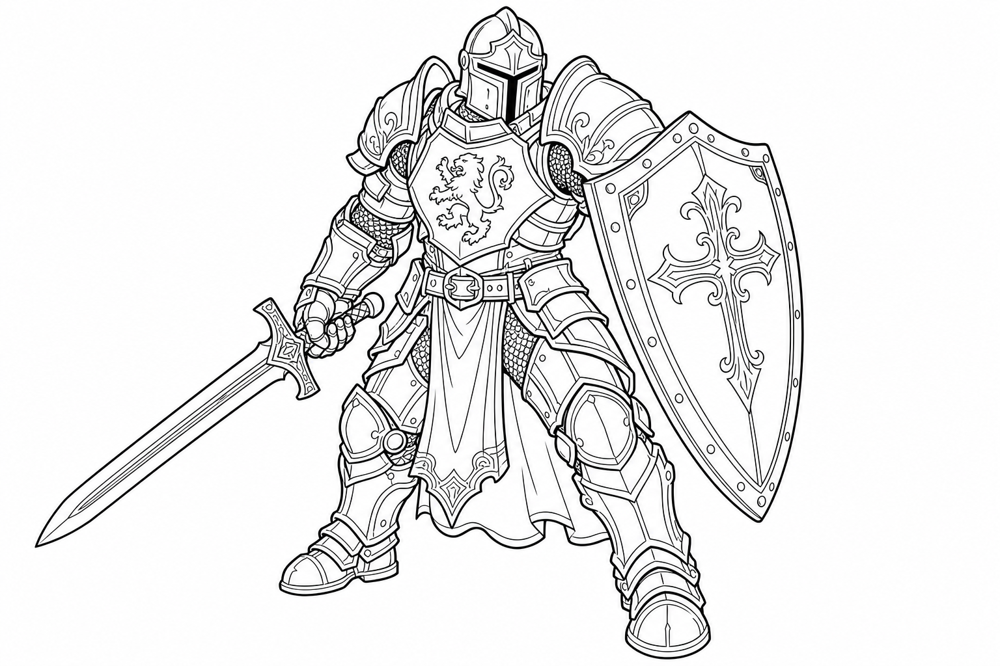

The Ultimate Weapon Master!
Do you want to be the best at combat? The Fighter is an expert with every weapon and every piece of armor in the world. Whether you want to be an archer shooting arrows from afar, a knight with a sword and shield, or a warrior swinging a giant hammer, the Fighter is for you!

This is what makes Fighters amazing! Once per short rest, you can push yourself past your normal limits and take a whole extra Action on your turn. You can use this to attack twice as many times, run super far, or attack and then dodge!
Fighters never give up! On your turn, you can use a Bonus Action to catch your breath and magically heal yourself for 1d10 + your Fighter level. You can do this once per short rest, which keeps you in the fight longer!
At level 1, you choose what kind of fighter you are. You get a permanent bonus based on your style! For example, the Archery style makes you more accurate with bows, while the Defense style gives you +1 to your Armor Class when wearing armor.
Every time you level up, your fighting skills become more legendary. Let's see what awesome powers you unlock from Levels 1 to 5!
| Level | Awesome New Powers! |
|---|---|
| 1 | Fighting Style & Second Wind: Pick your favorite way to fight (like Archery or Two-Weapon Fighting). Plus, you can instantly heal yourself with Second Wind in the middle of battle! |
| 2 | Action Surge: You are so fast and skilled that you can take an entire EXTRA Action on your turn! Double the attacks, double the fun! |
| 3 | Martial Archetype (Subclass): You choose your special Fighter path! Will you be a magical warrior, a tactical commander, or a pure champion of strength? |
| 4 | Ability Score Improvement: You can increase your Strength or Dexterity to hit harder and more often, or take a "Feat" to learn a special trick! |
| 5 | Extra Attack: The best level ever! Whenever you take the Attack action, you get to swing your weapon TWICE instead of once. Paired with Action Surge, you can attack FOUR times in one turn! |
If you use big swords, boost your Strength. If you use bows or nimble swords (like Rapiers), boost your Dexterity. Always try to make your main attacking stat higher!
At Level 3, you choose your "Martial Archetype." This is the special fighting technique you have mastered. Here are two incredibly fun subclasses to pick:
Do you want to hit the bad guys really, really hard? The Champion is all about pure, incredible physical power. You train your body to be the absolute best.
Why choose between a bow and magic when you can have both? Arcane Archers are fighters who have learned elven magic. They shoot special glowing arrows that have amazing magical effects!
You can use anything, so pick what sounds the coolest to you!
You are the leader on the battlefield. Here is how you win the day:
Save your Action Surge for a tough moment! If the boss monster is almost defeated, or if a friend is in trouble and needs you to run over and help right now, Action Surge is the ultimate hero button!
Fighters are brave warriors, but they can come from anywhere! A Fighter can be a royal knight, a pirate, or a farm kid who picked up a pitchfork to save the village.
Give your character a fun habit to make them memorable!
When the team is scared to open a dark door or fight a scary monster, your Fighter should step up and say, "Stand behind me! I've got this!"
You are becoming an unstoppable force on the battlefield! From levels 6 to 10, your fighting skills reach legendary levels.
| Level | Awesome New Powers! |
|---|---|
| 6 | Ability Score Improvement: Fighters get more of these than anyone else! Boost your Strength or Dexterity, or learn a cool new Feat (like becoming a master with a shield)! |
| 7 | Subclass Feature: Your Martial Archetype gives you a new trick! Champions get a bonus to jumping and moving, while Arcane Archers learn magical curving arrows! |
| 8 | Ability Score Improvement: Another one! Keep boosting those stats so you never miss an attack, or learn how to wear heavy armor even better. |
| 9 | Indomitable: If you fail a saving throw (like trying to dodge a dragon's fire breath or resist mind-control magic), you can reroll the dice and try again! You refuse to quit! |
| 10 | Subclass Feature: Champions get to pick a second Fighting Style (now you can be great at archery AND defense!), while Arcane Archers learn even more magical shots! |
Don't forget to use your Indomitable power when things look bad. A true Fighter never gives up!
Throughout history, brave Fighters have stood on the front lines to protect the world. Here are a few legendary heroes to inspire you:
A tough and grumpy dwarf with a heart of gold. He uses a legendary axe and a shield with a foaming mug symbol on it. He is a loyal friend and the king of his dwarf clan!
A fierce alien warrior called a Githyanki. She rides flying red dragons and fights with an incredibly sharp silver sword. She is all about discipline, strength, and never backing down from a challenge.
A brilliant fighter who used his smarts to invent a brand new weapon! Instead of a sword or bow, he fights from a distance using gadgets and sharp shooting to help his friends.
What will your story be? Will you be the knight who defeats the evil king, or the gladiator who wins the grand tournament?
As you explore dangerous dungeons, keep your eyes open for these amazing magic items that are absolutely perfect for a Fighter!
Speak a magical command word, and this sword bursts into bright, hot flames! It does extra fire damage every time you hit a bad guy and doubles as a great torch in dark caves.
A magical shield with a glowing, watchful eye painted on the front. It actually helps you see better and makes sure enemies can never surprise you or sneak up on you!
These enchanted boots make you move faster and let you jump incredibly high! You can leap over giant holes, jump right over enemies, or reach tall ledges with ease.
You can throw this sword into the air, and it will magically fly around and fight enemies all by itself while you use another weapon! It's like having an extra helper in battle.
Battles can be crazy! Use this quick guide to remember what you can do on your turn.
Once per short rest, you can push the "I win" button and take a whole extra Action right now!
Every legendary hero needs a portrait. What does your Fighter look like? What kind of armor do they wear? Do they have a really cool, giant sword?